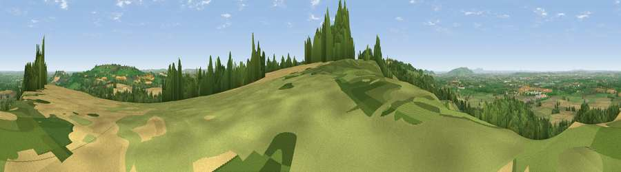

Viewpoint near Chipping Campden
#3470 in England · top 5% of its area beats it · near Chipping Campden · open accessWhere it is
The exact computed spot (SP 14125 40225). Click the marker for map links.
Public access: this spot lies on mapped open-access land (CRoW Act 2000) — you may roam here on foot. Computed from Natural England's CRoW access layer and OpenStreetMap rights of way — not the legal definitive map. Always verify locally.
The view, rendered

A 360° render of this exact spot computed from the terrain model, tree cover and land cover — summer colours, afternoon light, calibrated against photographs of famous viewpoints. Real trees, hedges and buildings will differ in detail.
The panorama
Grey silhouette: terrain skyline in each direction (720 bearings, Earth curvature and refraction included). Dashed green: skyline with trees (+15 m) and buildings (+8 m) as obstacles. Blue strip: how far the ground is visible on each bearing.
Where the view opens
Wedge length = distance to the farthest visible ground on that bearing (vegetation-aware). Rings at 10, 25 and 50 km.
What fills the view
46% grassland · 28% cropland · 24% woodland · 2% built-up
Angular shares of the visible panorama (visual magnitude), not map area. Landscape diversity 0.49 (0–1 Shannon).
Key numbers
More beautiful places nearby
The staircase of upgrades: each row has a higher view potential than everything closer. Driving times are estimates from straight-line distance, calibrated against real road routing — check an actual route before setting out.
| Place | Direction | Drive | Score |
|---|---|---|---|
| Viewpoint near Chipping Campden | NNE · 0 km | ~1 min | 76.3 |
| Broadway Hill | SSW · 5 km | ~11 min | 77.7 |
| Viewpoint near Elmley Castle | W · 16 km | ~29 min | 80.5 |
| Bredon Hill | W · 18 km | ~32 min | 83.0 |
| Black Hill | W · 37 km | ~56 min | 83.1 |
| Pinnacle Hill | W · 37 km | ~56 min | 85.7 |
| Worcestershire Beacon | W · 37 km | ~56 min | 87.1 |
| Viewpoint near West Quantoxhead | SW · 141 km | ~164 min | 87.9 |
52.06023, -1.79539 · source: screening · position refined by local search. Computed location — check access rights before visiting.